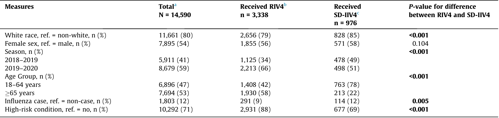
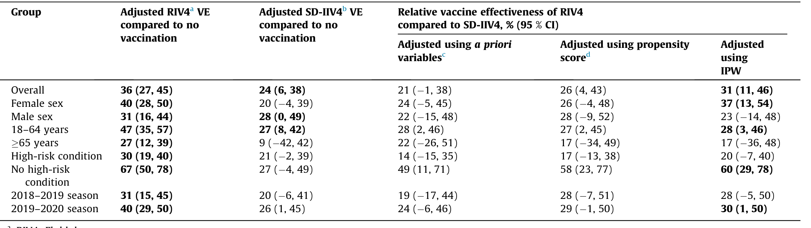

<!DOCTYPE html>
<html>
<head>
    <meta charset="UTF-8">
    <title>Extracted Document</title>
    <style>
        body { font-family: Arial, sans-serif; max-width: 900px; margin: 0 auto; padding: 20px; }
        h1, h2, h3 { color: #333; }
        .page { margin-bottom: 50px; border-bottom: 2px solid #ccc; padding-bottom: 30px; }
        .title { font-size: 1.3em; font-weight: bold; margin: 20px 0; }
        .text { margin: 15px 0; line-height: 1.6; }
        .figure { margin: 20px 0; text-align: center; }
        .figure img { max-width: 100%; height: auto; border: 1px solid #ddd; }
        .figure-caption { font-style: italic; color: #666; margin-top: 10px; }
        .metadata { background: #f5f5f5; padding: 15px; margin-top: 30px; }
    </style>
</head>
<body>

<h1>Extracted Document</h1>
<p><strong>Source:</strong> data/clinical_files/Zimmerman et al. (2023).pdf</p>
<p><strong>Total Pages:</strong> 7</p>
<hr>
<div class="page">
<h2>Page 1</h2>
<div class="figure">

<div class="figure-caption">[FIGURE 1 - See figure_p1_7ff31430.png]</div>
</div>
<div class="title">Vaccine effectiveness of recombinant and standard dose influenza
vaccines against influenza related hospitalization using a retrospective
test-negative design</div>
<div class="text">Richard K. Zimmerman a, Mary Patricia Nowalk a,⇑, Klancie Dauer b, Lloyd Clarke c, Jonathan M. Raviotta a<br>G.K. Balasubramani b</div>
<div class="text">a University of Pittsburgh, Department of Family Medicine, Suite 520 Schenley Place, 4420 Bayard St., Pittsburgh, PA 15260, USA<br>b University of Pittsburgh, Department of Epidemiology, Suite 600 Schenley Place, 4420 Bayard St., Pittsburgh, PA 15260, USA<br>c UPMC Health System, Department of Pharmacy, Division of Infectious Diseases/Pharmacy Department – AMP 5TH Floor Falk Medical Building, 3601 Fifth Ave, Pittsburgh, PA<br>15213, USA</div>
<div class="title">a b s t r a c t</div>
<div class="text">Background: Relative effectiveness of various vaccine formulations provide important input for vaccine<br>policy decisions and provider purchasing decisions. We used electronic databases to conduct a test-<br>negative case control study to determine relative vaccine effectiveness (rVE) of recombinant influenza<br>vaccine (RIV4) compared with standard dose vaccines (SD-IIV4) against influenza hospitalization.<br>Methods: Adults 18–64 and 65 years of age hospitalized in a large U.S. health system (19 hospitals) in<br>2018–2019 and 2019–2020 who were clinically tested for influenza using reverse transcription poly-<br>merase chain reaction (RT-PCR) assays were included. The hospital system electronic medical record<br>EMR) and the state immunization registry were used to confirm influenza vaccination. Propensity scores<br>with inverse probability weighting were used to adjust for potential confounders and determine rVE.<br>Results: Of the 14,590 individuals included in the primary analysis, 3,338 were vaccinated with RIV4 and<br>976 were vaccinated with SD-IIV4, with the balance of 10,276 being unvaccinated. Most participants<br>were white (80 %), most (70 %) had a high-risk condition, just over half were female (54 %) and age<br>65 years or older (53 %). Overall RIV4 rVE was significant when adjusted for propensity scores with<br>nverse probability weights (rVE = 31; 95 % CI = 11 %, 46 %). Among younger adults (18–64 years-old),<br>overall rVE of RIV4 was significant (rVE = 29; 95 % CI = 4 %, 47 %).<br>Conclusions: Over all adults, both RIV4 and SD-IIV4 were effective against influenza hospitalization, with<br>RIV4 providing better protection compared with SD-IIV4 overall, for females, younger adults, and those<br>with no high-risk conditions.</div>
<div class="title">1. Introduction</div>
<div class="text">Despite the availability of an array of influenza vaccines and<br>recommendations for vaccination of individuals age 6 months</div>
<div class="text">Abbreviations: aOR, Adjusted odds ratios; Adj-IV, Adjuvanted influenza vaccine;<br>EMR, Electronic medical records; GBM, Generalized Boosted Regression Models;<br>HD-IIV4, High dose quadrivalent influenza vaccine; PA-SIIS, Pennsylvania Statewide<br>Immunization Information System; RCT, Randomized controlled trial; RIV4,<br>Recombinant quadrivalent influenza vaccine; rVE, Relative vaccine effectiveness;<br>RT-PCR, Reverse transcription polymerase chain reaction; SD-IIV4, Standard dose<br>quadrivalent influenza vaccine; TWANG, Toolkit for Weighting and Analysis of<br>Nonequivalent Groups.<br>⇑Corresponding author.</div>
<div class="text">E-mail address: tnowalk@pitt.edu (M. Patricia Nowalk).</div>
<div class="text">https://doi.org/10.1016/j.vaccine.2023.06.056<br>0264-410X/ 2023 Elsevier Ltd. All rights reserved.</div>
<div class="text">and over, influenza remains a major cause of morbidity, hospital-<br>izations and mortality in the U.S. and worldwide. Over the last<br>1–2 decades, effectiveness of egg-based standard dose influenza<br>vaccine has been modest [1–5]. New influenza vaccine formula-<br>tions, designed to improve upon the effectiveness of these vacci-<br>nes, have been introduced in the U.S. over the past several years<br>including high dose- and adjuvanted egg-based vaccines. In addi-<br>tion, egg-free vaccines manufactured using cell-culture and recom-<br>binant<br>technologies<br>have<br>been<br>licensed<br>that<br>avoid<br>the<br>glycosylation site binding issues associated with egg adaptation<br>[6] that have been shown to reduce vaccine effectiveness (VE<br>against A(H3N2) strains.</div>
</div>
<div class="page">
<h2>Page 2</h2>
<div class="text">Reasonably accurate VE and relative VE (rVE) estimates depend<br>upon having access to a sufficient number of recipients of any<br>given vaccine type. Research on high dose quadrivalent influenza<br>vaccine (HD-IIV4) has reported rVE for HD-IIV4 compared with<br>standard dose quadrivalent influenza vaccine (SD-IIV4) of 24 %<br>against laboratory-confirmed influenza [7] and 27 % against influ-<br>enza hospitalization [8]. Several studies of cell-cultured influenza<br>vaccine were conducted prior to the 2019–2020 season (when all<br>four vaccine strains were cell-cultured) and have not shown signif-<br>icant rVE against influenza illness compared with SD-IIV4 [9]. A<br>large retrospective study of Medicare beneficiaries (65 years of<br>age) in the 2019–2020 season demonstrated no significant rVE of<br>cell-cultured quadrivalent influenza vaccine (ccIIV4) compared<br>with SD-IIV4 against influenza-related hospital encounters [10].<br>However, the study was limited by the fact that there were no<br>laboratory-confirmed influenza outcomes. Thus, the full benefit<br>of cell-culture vaccine technology is still largely unknown.<br>Two large studies have explored rVE of recombinant quadriva-<br>lent influenza vaccine (RIV4). The Medicare beneficiaries study<br>[10] using retrospective data as described above, reported signifi-<br>cant rVE of RIV4 vs. SD-IIV4) against influenza-related hospital<br>encounters. Secondly, a randomized controlled trial (RCT) found<br>significant<br>rVE<br>of<br>RIV4<br>compared<br>with<br>SD-IIV4<br>among<br>adults 50 years old, but not for adults 65 years old [11].<br>Given the higher cost of newer vaccines, and the high risk of<br>influenza complications for certain groups, including the elderly<br>[12], there is interest in providing the most effective vaccine to<br>the largest number of patients to prevent influenza-related mor-<br>bidity and mortality. Additional rVE studies of new vaccine formu-<br>lations are needed to help determine vaccination best practices.<br>This study is a retrospective test-negative case-control study of<br>influenza VE against hospitalization using data from electronic<br>medical records (EMR) of a single large health system to determine<br>the rVE of RIV4 among adults 18–64 and 65 years of age in the<br>2018–2019 and 2019–2020 seasons.</div>
<div class="title">2. Methods</div>
<div class="text">The<br>University<br>of<br>Pittsburgh<br>Institutional<br>Review<br>Board<br>approved this retrospective study using EMR databases. A test-<br>negative case-control study estimates VE by comparing the odds<br>of vaccination among patients hospitalized with influenza like ill-<br>ness with confirmed influenza to the odds of vaccination among<br>controls, i.e., patients hospitalized with influenza like illness who<br>tested negative for influenza.</div>
<div class="title">2.1. Patients</div>
<div class="text">Patients were individuals 18 years and older as of August 1 each<br>season who were hospitalized in one of nineteen UPMC hospitals<br>in central and southwestern Pennsylvania and had a test for influ-<br>enza at any time between 11/01/2018 and 04/30/2020. A Ther-<br>adoc database (an infection control software) was used to<br>identify those tested for influenza using reverse transcription poly-<br>merase chain reaction (RT-PCR) assays performed in a centralized<br>clinical lab for some hospitals and individual hospital labs for<br>others. Influenza cases were those who tested positive for influ-<br>enza and controls were those who tested negative for influenza<br>regardless of any other identified viral infection. Both the EMR<br>and Pennsylvania Statewide Immunization Information System<br>(PA-SIIS) were queried for influenza vaccines given between<br>August 1 and the date of illness/PCR testing. Exclusion criteria were<br>testing within 2 weeks of vaccination, having 2 different types of<br>influenza vaccine in a season, missing and unknown vaccination<br>information and having an immunocompromising condition.</div>
<div class="title">2.2. Statistical methods</div>
<div class="text">For primary analysis, all adults 18 years were included, then<br>for<br>secondary<br>analyses,<br>they<br>were<br>stratified<br>into<br>age<br>groups 65 years, and 18–64 years. Sample size calculations deter-<br>mined that we had 48 % power to detect an effect size of 9.5 %<br>change from a baseline probability of 11.7 %. Post hoc sample size<br>calculations for age subgroup analyses resulted in 42 % and 20 %<br>power for ages 18–64 years and 65 years with effect sizes of<br>8.9 %, and 8.7 %, with the detectable difference of 3 % and 2.1 %<br>respectively, thus these analyses were likely to be underpowered<br>to detect a significant rVE for RIV4 over SD-IIV4. Moreover, rVE<br>estimates by vaccine strain were also precluded by insufficient<br>sample sizes. Descriptions of variables for each group were sum-<br>marized as mean and standard deviation for age and frequencies<br>and percentages for categorical data. Baseline characteristics<br>between the vaccination groups were compared using chi-square<br>or the Fisher’s exact tests for categorical variables and ages were<br>compared by using t-test.<br>Using adjusted odds ratios (aORs) obtained from multivariable<br>logistic regression models, adjusted VE estimates were calculated<br>as (1-aOR) X 100. The dependent variable of interest was influenza<br>status. The primary exposure of interest was vaccine type (recom-<br>binant, SD-IIV4s and in some analyses, enhanced vaccines such as<br>HD-IIV4 and adjuvanted influenza vaccine (Adj-IV)). The CDC has<br>recommended the use of ‘‘enhanced vaccines” for adults ages 65<br>and older beginning in 2022 [13]. Influenza vaccines were identi-<br>fied through the EMR; SD-IIV4 included Afluria, Fluarix, FluLaval,<br>Standard Dose Fluzone and FlucelVax. HD-IIV4 was High Dose Flu-<br>zone, RIV4 was Flublok and Adj-IV was FluAd. Other independent<br>variables were age, influenza season (2018–2019 and 2019–<br>2020), sex, race and presence of one or more high-risk conditions.<br>Adjusted VE was calculated for RIV4, SD-IIV4 and combined RIV4,<br>high dose, egg-based and adjuvanted vaccines. Relative VE (rVE)<br>was calculated as 1 minus the ratio of adjusted VE times 100 %.<br>We conducted propensity adjustment analyses to reduce the<br>potential impact of selection effects (i.e., confounding) on baseline<br>characteristics. We estimated the propensity scores using the Gen-<br>eralized Boosted Regression Models (GBM) approach, which is a<br>nonparametric model that allows for nonlinear relationships with<br>a maximum number of iterations set to the default (i.e.,10,000)<br>that minimized the balance statistics of interest. We used the bal-<br>ance statistic based on absolute standardized bias (also referred as<br>the effect size or absolute standardized mean difference) and sum-<br>marized across variables. We allow a maximum of three splits for<br>each tree in the model, allowing for three-way interactions among<br>all covariates to be considered. The shrinkage parameter was set to<br>0.0005 to ensure a smooth fit.<br>We also checked the balance of all the variables included in the<br>model to assess the quality of the propensity score and evaluate<br>common support, using a value under 0.25 as indicative of good<br>balance. We also used the balance plots to compare the propensity<br>score distributions and to evaluate the common support.<br>Using the propensity score, we calculated the inverse probabil-<br>ity of receiving SD-IIV4 weighting. In this approach, for an individ-<br>ual receiving SD-IIV4 t, the weight equals 1=ptðxÞ , where ptðxÞ is<br>the propensity score (probability that an individual with character-<br>istics x receives SD-IIV4 t). A propensity score weighted logistic<br>regression with influenza status as the dependent variable was fit-<br>ted to estimate the effect of vaccine (SD-IIV4 vs. RIV4) on outcome<br>and also used inverse probability weighting to estimate VE and its<br>95 % confidence intervals. We added covariates like high-risk con-<br>ditions and influenza seasons to increase the probability of achiev-<br>ing a good balance for the propensity score modeling. We used five<br>plot methods to determine that there were no extreme values in<br>the weights (i.e., checked the balance): 1. optimization using the</div>
</div>
<div class="page">
<h2>Page 3</h2>
<div class="text">estimated mean average treatment effect; 2. box plot of the<br>propensity of the vaccine; 3. the standardized effect size of the<br>unweighted and weighted values; 4. t-test p-values of the group<br>mean of the covariate; and 5. Kolmogorov-Smirnov (K-S) p-<br>values of the covariates. In all, the weights were stable and bal-<br>anced. Because all the covariates were balanced, we fit the model<br>with propensity score as an adjustment factor and the inverse<br>probability weight to estimate the rVE.<br>We conducted secondary, sensitivity analyses restricted to age<br>groups 18–64 years and 65 years comparing recombinant and<br>SD-IIV4, and also for those 65 years, comparing recombinant,<br>high-dose egg-based and adjuvanted vaccines combined and SD-<br>IIV4. We conducted propensity score adjustments similar to those<br>used in the primary analyses. All analyses were two-sided and the<br>alpha level was set to 0.05. All analyses were conducted using SAS,<br>version 9.4 statistical software (SAS Institute Inc., Cary, NC). We<br>used the Toolkit for Weighting and Analysis of Nonequivalent<br>Groups (TWANG) software package and the SAS Macros (available<br>at https://www.rand.org/statistics/twang/downloads.html) to cal-</div>
<div class="title">3. Results</div>
<div class="text">The total number of influenza test results among inpatients was<br>18,467 of which 530 were excluded because of missing vaccination<br>information or vaccination < 14 days before illness, and 3,264 were<br>excluded from the primary analyses because patients were<br>immunocompromised or received enhanced vaccines other than<br>RIV4 (n = 613), leaving 14,590 for the primary analysis (Fig. 1).<br>Of these, 3,338 were vaccinated with RIV4 and 976 were vacci-<br>nated with SD-IIV4, with the balance of 10,276 being unvaccinated.<br>For the secondary analyses, the analyzable cohort included the 613<br>HD-IIV4 and Adj-IV recipients bringing the total analyzable sample<br>to 15,203 (Fig. 2). The influenza positivity rate was 12.4 %<br>(1,803/14,590) overall, 14.4 % among younger adults 18–64 years<br>and 11.1 % (922/8306) among those 65 years, with the addition<br>of 613 patients who received enhanced vaccines that were not<br>included in the primary analysis.<br>Demographic characteristics of the population for the primary<br>analyses are shown in Table 1; most participants were white<br>(80 %), just over half were female (54 %) and age 65 years or older</div>
<div class="figure">

<div class="figure-caption">[FIGURE 4 - See figure_p3_42089d8a.png]</div>
</div>
<div class="text">Fig. 1. Flow chart for primary analyses. The primary analyses included only participants who received recombinant quadrivalent influenza vaccine (RIV4), standard dose<br>quadrivalent influenza vaccine (SD-IIV4) and the unvaccinated, who were not otherwise excluded.</div>
<div class="title">Vaccine 41 (2023) 5134–5140</div>
<div class="text">(53 %), and most (70 %) had a high-risk condition. Patients who<br>received RIV4 were significantly less often white (P < 0.001) and<br>age 65 years or older (P < 0.001), and had more high-risk condi-<br>tions (P < 0.001) than those who received SD-IIV4.</div>
<div class="text">Table 2 shows adjusted VE for both RIV4 and SD-IIV4s and rVE<br>of RIV4 compared with SD-IIV4s. VE of RIV4 was significant against<br>influenza hospitalizations overall (36 %; 95 % CI = 27, 45) and for<br>population subgroups based on sex, age and risk conditions. VE<br>of SD-IIV4 was significant overall (24 %; 95 % CI = 6, 38) and for<br>males and younger adults, but not for other subgroups. Overall<br>rVE for RIV4 vs SD-IIV4 against influenza hospitalization was sig-<br>nificant when adjusted for propensity scores with inverse probabil-<br>ity weights (rVE = 31%; 95 % CI = 11, 46). Subgroup analyses by age<br>and risk group identified significant rVE for recombinant influenza<br>vaccine among females (rVE = 37%; 95 % CI = 13, 54), younger<br>adults 18–64 years old (rVE = 28%; 95 % CI = 3, 46) and for those<br>without high-risk conditions (rVE = 60%; 95 % CI = 29, 78).<br>In secondary analyses, the participants, including those who<br>received HD-IIV4 and Adj-IV, were then divided in two age groups<br>(18–64 and 65 years) to calculate rVE. Characteristics of these<br>groups by vaccine type are shown in Table 3. Among younger<br>adults, receipt of RIV4 was significantly associated with non-<br>white race (83.7 % RIV4 vs. 71.8 % SD-IIV4; P < 0.001), fewer cases<br>of influenza (9.2 % RIV4 vs. 11.9 % SD-IIV4; P < 0.041) and having a<br>high-risk condition (83.2 % RIV4 vs. 66.8 % SD-IIV4; P < 0.001).<br>Among older adults, receipt of RIV4 was significantly associated<br>with having a high-risk condition (91.1 % RIV4 vs. 78.4 % SD-IIV4<br>P < 0.001). In a second scenario older adults receiving SD-IIV4 were<br>compared with those receiving RIV4, HD-IIV4, or Adj-IV , because<br>these latter two ‘‘enhanced” vaccines are now recommended for<br>adults 65 years. Again, having a high-risk condition was associ-<br>ated with receipt of one of these vaccines (87.5 % combined vs.<br>78.4 % SD-IIV4; P < 0.001).<br>Adjusted VEs for RIV4 for younger adults were significant across<br>all subgroups, whereas, VE for SD-IIV4 was significant for males<br>only. Among older adults, VE of RIV4 was significant for females<br>(47 %; 95 % CI = 30, 60) but not males (2 %; 95 % CI = –33, 21)<br>or for those with and without high-risk conditions. VEs for<br>those 65 years old receiving RIV4, HD-IV4 or Adj-IV showed sim-<br>ilar patterns of significance across subgroups (overall VE = 24 %;<br>95 % CI = 11, 36; females VE = 38 %; 95 % CI = 22, 51); high risk</div>
</div>
<div class="page">
<h2>Page 4</h2>
<div class="figure">

<div class="figure-caption">[FIGURE 1 - See figure_p4_e75909b0.png]</div>
</div>
<div class="text">Fig. 2. Flow chart for secondary analyses. The secondary analyses included participants who received recombinant quadrivalent influenza vaccine (RIV4), standard dose<br>quadrivalent influenza vaccine (SD-IIV4), high dose quadrivalent influenza vaccine (HD-IIV4), adjuvanted influenza vaccine (Adj-IIV) and the unvaccinated, who were not<br>otherwise excluded.</div>
<div class="title">Table 1</div>
<div class="text">Characteristics of all participants, overall and by receipt of recombinant quadrivalent influenza vaccine (RIV4) or standard dose quadrivalent influenza vaccine (SD-IIV4).</div>
<div class="figure">

<div class="figure-caption">[TABLE 5 - See table_p4_c5f5b2f4.png]</div>
</div>
<div class="text">a Includes unvaccinated and those vaccinated with enhanced vaccines: High dose Fluzone and adjuvanted FluAd.<br>b RIV4: Flublok.<br>c SD-IIV4: Afluria, Fluarix, FluLaval, Standard Dose Fluzone and FlucelVax.</div>
<div class="text">conditions VE = 22 %; 95 % CI = 6, 34; no high-risk condition<br>VE = 38 %; 95 % CI = 3, 61). VE of standard dose IIV4 was not signif-<br>icant for any group 65 years old (Table 4).<br>Table 5 shows the rVE in three scenarios: 1) for 18–64-year-old<br>adults, RIV4 vs. SD-IIV4; and for 65-year-old adults: 2) RIV4 vs.<br>SD-IIV4; and 3) RIV4 + HD-IIV4 +Adj-IV vs. SD-IIV4. Among<br>younger adults, overall rVE of RIV4 was significant (rVE = 29 %;<br>95 % CI = 4, 47). Subgroup analyses identified significant rVE for<br>RIV4 among males (rVE = 43 %; 95 % CI = 6, 65), and for those with-<br>out high-risk conditions (rVE = 51 %; 95 % CI = 7, 74). Among older<br>adults, neither rVE for RIV4 nor rVE for RIV4 + HDIV4 +Adj-IV was<br>significant overall or for any subgroup.</div>
<div class="title">4. Discussion</div>
<div class="text">Among over 14,000 mostly white, and mostly high-risk adult<br>patients hospitalized for an acute respiratory infection in 2018–<br>2019 and 2019–2020, 12 % were diagnosed with influenza. Com-<br>pared with standard dose influenza vaccine recipients, recipients<br>of so-called ‘‘enhanced” vaccines such as RIV4, Adj-IV and HD-<br>IIV4 were more often non-white, older, and with underlying med-</div>
<div class="text">ical<br>conditions,<br>placing<br>them<br>at<br>high<br>risk<br>for<br>influenza<br>complications.<br>Among all adults hospitalized for acute respiratory infections,<br>both RIV4 and SD-IIV4 were significantly effective overall against<br>influenza hospitalizations, but only RIV4 was effective for all sub-<br>groups tested in this analysis. The differences in VE of RIV4 and<br>SD-IIV4 were reflected in overall significant rVE for RIV4. However,<br>within the overall population, rVE of RIV4 was significant for<br>females, younger adults and those without high-risk conditions,<br>the latter two groups being those who were less likely to receive<br>RIV4. When stratified by age groups, rVE of RIV4 of younger adults<br>was significant overall, among males and those without a high-risk<br>condition; whereas, among older adults, neither RIV4 nor all high<br>dose or adjuvanted vaccines combined was significantly more<br>effective than standard dose IIV4. This was likely due to limited<br>use of the SD-IIV4 (only 213 seniors received SD-IIV4), resulting<br>in large confidence intervals. The large market share in our<br>study of RIV4, HD-IIV4 and Adj-IV in senior adults, relative to<br>SD-IIV4 limited our analysis and seemingly anticipated the 2022<br>decision by ACIP to recommend these three vaccines for older<br>adults [13].</div>
</div>
<div class="page">
<h2>Page 5</h2>
<div class="title">Table 2</div>
<div class="text">Vaccine effectiveness (VE) of recombinant quadrivalent influenza vaccine (RIV4) and standard dose quadrivalent influenza vaccine (SD-IIV4) and relative VE of RIV4 using<br>propensity scores and inverse probability weighting (IPW).</div>
<div class="figure">

<div class="figure-caption">[TABLE 3 - See table_p5_d252528d.png]</div>
</div>
<div class="text">RIV4: Flublok.<br>b SD-IIV4: Afluria, Fluarix, FluLaval, SD Fluzone, and FlucelVax.<br>c Multivariable logistic regression model adjusted for age, race, sex, season, and high-risk conditions, except that the stratified variable is not included as an adjustment in<br>own analysis.<br>d Propensity score: Generalized Boosted Regression Method was used to calculate the propensity score using TWANG (Toolkit for Weighting and Analysis of Nonequivalent<br>oups).</div>
<div class="title">Table 3</div>
<div class="text">haracteristics of participants by age group and vaccine received including recombinant quadrivalent influenza vaccine (RIV4), standard dose quadrivalent influenza vaccine (SD-<br>V4), high dose quadrivalent influenza vaccine (HD-IIV4) and adjuvanted influenza vaccine (Adj-IV) N = 15,203.</div>
<div class="figure">

<div class="figure-caption">[TABLE 7 - See table_p5_37ad3002.png]</div>
</div>
<div class="text">a SD-IIV4: Afluria, Fluarix, FluLaval, SD Fluzone and FlucelVax.<br>b For difference between those receiving RIV4 and those receiving SD-IIV4.<br>c RIV4: Flublok; HD-IIV4: High dose Fluzone; Adj-IV: FluAd.<br>d For difference between those receiving RIV4, HD-IIV4, Adj-IV and those receiving</div>
<div class="title">Table 4</div>
<div class="text">Adjusted vaccine effectiveness (VE) of recombinant quadrivalent influenza vaccine (RIV4), standard dose quadrivalent influenza vaccine (SD-IIV4), and RIV4 + high dose<br>quadrivalent influenza vaccine (HD-IIV4) + adjuvanted influenza vaccine (Adj-IV), compared with no vaccination, by age group.</div>
<div class="figure">

<div class="figure-caption">[TABLE 11 - See table_p5_d032edfd.png]</div>
</div>
<div class="text">Only two other studies were identified that have compared VE<br>of RIV4 with SD-IIV4. In a RCT, Dunkle et al reported a significant<br>rVE of 30 % among adults 50 years old against RT-PCR confirmed<br>influenza-like illness (ILI) but when stratified by age groups, rVE<br>was not significant for those 65 years for either RT-PCR con-<br>firmed ILI nor culture positive ILI. For those 50–64 years, rVE was<br>significant against RT-PCR ILI (42 %; 95 % CI = 15, 61) and against<br>culture positive ILI (44 %; 96 % CI = 10, 65) [11]. The other study<br>was a retrospective cohort study of Medicare beneficiaries 65 years<br>of age and above in 2019–2020 by Izurieta et al. [10] that reported</div>
<div class="text">significant rVE of RIV4, HD-IIV3 and adjuvanted IIV3, respectively,<br>compared with SD-IIV4 against influenza-related hospital encoun-<br>ters. rVE of RIV4 was significant compared with HD-IIV3 and cell<br>cultured IIV4, but not adjuvanted IIV3. However, that study was<br>limited by the fact that the primary outcome was based on ICD-<br>10 codes and not specifically on laboratory confirmed influenza.<br>In a 2019 editorial, Flannery and Fry stated, ‘‘Evidence to inform<br>future policy decisions will be dependent on multiple studies with<br>different but complementary methods that can report on annual<br>results over several seasons as well as statistical models to evalu-</div>
</div>
<div class="page">
<h2>Page 6</h2>
<div class="figure">

<div class="figure-caption">[TABLE 1 - See table_p6_b6160343.png]</div>
</div>
<div class="text">ate potential impact of changes in vaccine uptake.” [16] This study<br>adds to the evidence for the improved performance of RIV4 among<br>all adults, and supports its superior effectiveness over SD- IIV4 for<br>adults 18–64 years of age.</div>
<div class="title">4.1. Strengths and limitations</div>
<div class="text">This study has several strengths and limitations. Firstly, the<br>demographics of the study population were similar to those of<br>the Allegheny County general population of adults in which 79 %<br>are white and 51 % are female [17], thus contributing to generaliz-<br>ability. Moreover, the health system includes urban tertiary and<br>quaternary care hospitals as well as suburban and rural commu-<br>nity hospitals. It has a 60 % market share of all hospital beds in<br>the county and accepts patients with all insurance products. Sec-<br>ond, as an integrated healthcare system, its EMR is robust, with<br>regular uploads of vaccination data from the state immunization<br>registry. In addition, we verified vaccination status through the<br>state registry with a specific data request. In previous research,<br>we have demonstrated that registry data are a reasonable source<br>for influenza vaccination data [18]. As a result, we have confidence<br>that influenza vaccinations are captured accurately in the EMR. If<br>vaccinations were not captured in the EMR or state registry, they<br>were classified as unvaccinated. While this classification would<br>likely introduce bias into VE estimates [16], it would likely not bias<br>rVE estimates, as there is no reason to believe that any vaccine is<br>preferentially included or excluded from reporting to the state reg-<br>istry. This study excluded subjects with immunosuppressive con-<br>ditions or those receiving immunosuppressive therapy whose<br>response to vaccines is limited. Because data focused on hospital-<br>ized patients, there may have been milder cases that did not<br>require medical care and were not captured in the EMR, thus did<br>not contribute to these estimates. Adding measures of severity of<br>illness into the model would improve the accuracy of the VE esti-<br>mates, however, these measures were not available. The differ-<br>ences<br>in<br>severity<br>are<br>likely<br>narrower<br>given<br>that<br>all<br>were<br>sufficiently ill to require hospitalization, thus mitigating the need<br>for such an adjustment. It is possible that there may have been<br>selection bias among those who received influenza virus testing,<br>for example, clinicians may preferentially test those who are<br>unvaccinated against influenza thus increasing the proportion of<br>unvaccinated cases. Based on a previous study among patients in<br>this health system that found no increase in testing based on vac-<br>cination status [19], we feel confident that this is not a concern.<br>While a relatively large cohort of adults is included in this study,<br>the sample size of SD-IIV4 recipients may have been inadequate<br>to detect meaningful rVE estimates for specific subgroups.<br>These data should be viewed in the context of the seasons for<br>which data were collected. These seasons were ‘‘typical” in that<br>influenza began to increase in November, peaking in January and<br>February both seasons, and numbers of influenza-related deaths<br>were 28,000 in 2018–2019 and 25,000 in 2019–2020. These sea-<br>sons were atypical in that virtually no influenza B circulated in<br>2018–2019 but there were both A(H1N1) and A(H3N2) peaks<br>and in 2019–2020, influenza B circulated early followed by A<br>(H1N1) in contrast to typical seasons in which the influenza A<br>wave precedes the influenza B wave [14,15]. Seasons with higher<br>circulation of A(H3N2) may demonstrate higher rVE of RIV4,<br>because it is not subject to mutations to the A(H3N2) glycosylation<br>binding site that reduce the effectiveness of egg-based vaccines.</div>
<div class="title">5. Conclusions</div>
<div class="text">Both RIV4 and SD-IIV4 were significantly effective among all<br>adults<br>against<br>influenza-related<br>hospitalizations<br>during<br>the</div>
</div>
<div class="page">
<h2>Page 7</h2>
<div class="text">2018–2019 and 2019–2020 influenza seasons. Adjusted VEs for<br>RIV4, but not SD-IIV4 were significant for each of the subgroups<br>tested. Relative vaccine effectiveness of RIV4 compared with SD-<br>IIV4 was significant for all adults and for younger and healthier<br>recipients.</div>
<div class="title">Data availability</div>
<div class="text">Data will be shared if approved by the health system.</div>
<div class="title">Declaration of Competing Interest</div>
<div class="text">The authors declare the following financial interests/personal<br>relationships which may be considered as potential competing<br>interests: Drs. Zimmerman, Raviotta, Nowalk, and Balasubramani<br>received investigator-initiated grant funding from Sanofifor this<br>project. Drs. Nowalk and Balasubramani, have grant funding from<br>Merck & Co., Inc. for an unrelated project. Ms. Dauer and Mr. Clarke<br>have no conflicts to report.</div>
<div class="title">Acknowledgements</div>
<div class="text">This work was supported by Sanofithrough an investigator-<br>initiated grant (SP-2021-13463; RKZ). This work represents the<br>views of the authors and not Sanofi.</div>
<div class="title">Data</div>
<div class="text">Deidentified data may be made available upon request.</div>
<div class="title">Author contributions</div>
<div class="text">RKZ conceived the study, procured funding, oversaw the project<br>and edited the manuscript. GKB oversaw the data preparation and<br>analyses, and edited the manuscript. MPN drafted and edited the<br>manuscript. KD managed the data and edited the manuscript. LC<br>procured data and edited the manuscript. JMR helped conceive<br>the study, procure funding and edited the manuscript.</div>
<div class="title">References</div>
<div class="text">[1] Ohmit SE, Thompson MG, Petrie JG, Thaker SN, Jackson ML, Belongia EA, et al.<br>Influenza vaccine effectiveness in the 2011–2012 season: protection against<br>each circulating virus and the effect of prior vaccination on estimates. Clin<br>Infect Dis 2014;58(3):319–27. https://doi.org/10.1093/Cid/Cit736.<br>[2] McLean HQ, Thompson MG, Sundaram ME, Kieke BA, Gaglani M, Murthy K,<br>et al. Influenza vaccine effectiveness in the United States during 2012–2013:<br>variable protection by age and virus type. J Infect Dis 2015;211(10):1529–40.<br>https://doi.org/10.1093/infdis/jiu647.</div>
<div class="title">Vaccine 41 (2023) 5134–5140</div>
<div class="text">[3] Gaglani M, Pruszynski J, Murthy K, Clipper L, Robertson A, Reis M, et al.<br>Influenza vaccine effectiveness against 2009 pandemic influenza A (H1N1)<br>virus differed by vaccine type during 2013–2014 in the United States. J Infect<br>Dis 2016;213(10):1546–56. https://doi.org/10.1093/infdis/jiv577.<br>[4] Zimmerman RK, Nowalk MP, Chung J, Jackson ML, Jackson LA, Petrie JG, et al.<br>2014–2015 influenza vaccine effectiveness in the United States by vaccine<br>type. Clin Infect Dis 2016;63(12):1564–73.<br>[5] Jackson ML, Chung JR, Jackson LA, et al. Influenza vaccine effectiveness in the<br>United States — 2015/16 season. N Engl J Med 2017;377(6):534–43.<br>[6] Zost SJ, Parkhouse K, Gumina ME, Kim K, Diaz Perez S, Wilson PC, et al.<br>Contemporary H3N2 influenza viruses have a glycosylation site that alters<br>binding of antibodies elicited by egg-adapted vaccine strains. Proc Natl Acad<br>Sci 2017;114(47):12578–83.<br>[7] DiazGranados CA, Dunning AJ, Kimmel M, Kirby D, Treanor J, Collins A, et al.<br>Efficacy of high-dose versus standard-dose influenza vaccine in older adults. N<br>Engl J Med 2014;371(7):635–45.<br>[8] Doyle JD, Beacham L, Martin ET, Talbot HK, Monto A, Gaglani M, et al. Relative<br>and absolute effectiveness of high-dose and standard-dose influenza vaccine<br>against influenza-related hospitalization among older adults—United States,<br>2015–2017. Clin Infect Dis 2021;72(6):995–1003.<br>[9] Rajaram S, Boikos C, Gelone DK, Gandhi A. Influenza vaccines: the potential<br>benefits of cell-culture isolation and manufacturing. Therap<br>Adv Vacc<br>Immunoth 2020;8:1–10. https://doi.org/10.1177/2515135520908121.<br>[10] Izurieta HS, Lu M, Kelman J, Lu Y, Lindaas A, Loc J, et al. Comparative<br>effectiveness of influenza vaccines among US Medicare beneficiaries ages 65<br>years and older during the 2019–2020 season. Clin Infect Dis 2021;73(11):<br>e4251–9.<br>[11] Dunkle LM, Izikson R, Patriarca P, Goldenthal KL, Muse D, Callahan J, et al.<br>Efficacy of recombinant influenza vaccine in adults 50 years of age or older. N<br>Engl J Med 2017;376(25):2427–36.<br>[12] Centers for Disease Control and Prevention. People at Higher Risk of Flu<br>Complications.<br>Updated<br>9/6/2022.<br>Accessed<br>12/19/2022,<br>https://www.<br>cdc.gov/flu/highrisk/index.htm.<br>[13] Grohskopf LA, Blanton LH, Ferdinands JM, Chung JR, Broder KR, Talbot HK,<br>Morgan RL, Fry AM. Recommendations of the Advisory Committee on<br>Immunization<br>Practices<br>—<br>United<br>States,<br>2022–23<br>Influenza<br>Season.<br>Morbidity and Mortality Weekly Report (MMWR). August 26, 2022;71<br>(1):1–28. https://doi.org/10.15585/mmwr.rr7101a1.<br>[14] Centers for Disease Control and Prevention. Archived: Estimated Influenza<br>Illnesses, Medical visits, Hospitalizations, and Deaths in the United States —<br>2018–2019 influenza season. Updated 9/30/2021. Accessed 2/7/2023, https://<br>www.cdc.gov/flu/about/burden/2018-2019/archive-09292021.html#::<br>text=The%20overall%20burden%20of%20influenza,hospitalizations%2C%20and<br>%2028%2C000%20flu%20deaths.<br>[15] Centers for Disease Control and Prevention. Estimated Flu-Related Illnesses,<br>Medical visits, Hospitalizations, and Deaths in the United States — 2019–2020<br>Flu Season. Updated 10/7/2022. Accessed 2/7/2023, https://www.cdc.gov/flu/<br>about/burden/2019-2020.html.<br>[16] Flannery B, Fry AM. Comparing influenza vaccine types: the path toward<br>improved influenza vaccine strategies. Oxford University Press US; 2019. p.<br>1237–9.<br>[17] United States CensusBureau. Quick Facts Allegheny County, Pennsylvania.<br>Accessed<br>2/7/2023,<br>https://www.census.gov/quickfacts/<br>alleghenycountypennsylvania.<br>[18] Nowalk MP, D’Agostino HEA, Zimmerman RK, Saul SG, Susick M, Raviotta JM,<br>et al. Agreement among sources of adult influenza vaccination in the age of<br>immunization information systems. Vaccine 2021;39(47):6829–36.<br>[19] Balasubramani GK, Saul S, Nowalk MP, Middleton DB, Ferdinands JM,<br>Zimmerman<br>RK.<br>Does<br>influenza<br>vaccination<br>status<br>change<br>physician<br>ordering patterns for respiratory viral panels? Inspection for selection bias.<br>Hum Vaccin Immunother 2019;15(1):91–6.</div>
</div>
<div class="metadata">
<h3>Extraction Metadata</h3>
<p>Text blocks: 63</p>
<p>Figures/Tables: 8</p>
</div>

</body>
</html>
